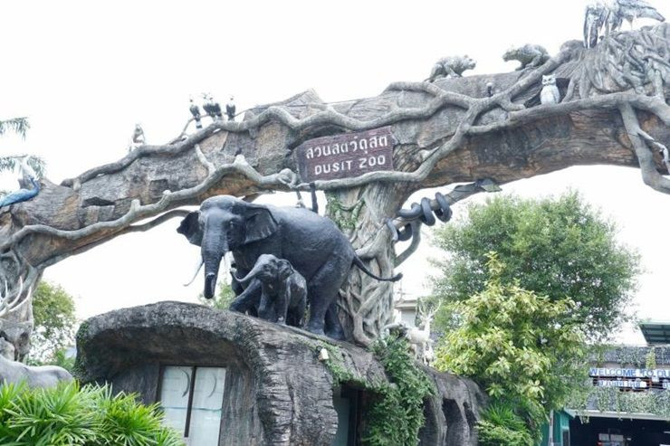

สวนสัตว์
สวนสัตว์ คือ สถานที่จัดแสดงสัตว์ป่านอกถิ่นอาศัยโดยมีวัตถุประสงค์ในการรวบรวมสัตว์นานาชนิดไว้เพื่อประโยชน์ในการศึกษา และอำนวยบริการแก่ประชาชน รวมทั้งสองเสริมและจัดให้มีการบำรุงและผสมพันธุ์สัตว์ต่างๆ ไว้เพื่อมิให้สูญพันธุ์ โดยมีหน้าที่สำคัญคือ 1. การอนุรักษ์ 2. การวิจัย 3. การให้การศึกษา 4. การเป็นสถานที่สำหรับการพักผ่อนหย่อนใจแก่ประชาชน โดยมุ่งหวังให้ผู้เที่ยวชมเข้ามาเรียนรู้ชีวิตของสัตว์ป่าทุกชนิด ไม่ว่าจะเป็นสัตว์เลี้ยงลูกด้วยน้ำนม สัตว์ปีก สัตว์เลื้อยคลาน สัตว์สะเทินน้ำสะเทินบก และสัตว์น้ำ โดยเน้นให้เห็นสภาพความเป็นอยู่ตามถิ่นกำเนิดตามสภาพแวดล้อมของกลุ่มสัตว์ตามพฤติกรรม
พัฒนาการของสวนสัตว์
ในอดีตสวนสัตว์จะเป็นส่วนหนึ่งของสวนของคหบดีหรือคนชั้นสูง ในการสะสมหรือรวบรวมสัตว์ที่หายากเพื่ออวดโชว์กันในแวดวงสังคมชั้นสูง ในยุโรปสวนสัตว์มักเป็นส่วนหนึ่งของพระราชอุทยานและตั้งอยู่ในเขตพระราชวัง เช่น พระราชวังเชินบรุนน์ ในออสเตรีย เดิมสวนสัตว์ในยุคแรกๆนี้ เป็นเพียงกรงหรือคอกกักขังสัตว์ ต่อมามีการรวมเข้ากับสวนหรืออุทยาน มีการปลูกต้นไม้ น้ำพุประดับตกแต่ง จนปัจจุบันในหลายๆประเทศ ได้ปรับปรุงสวนสัตว์ที่มีอยู่เดิมให้มีสภาพแวดล้อมเหมาะกับสัตว์มากขึ้น ได้แก่ การสร้างคูน้ำ หรือรั้วที่กลมกลืนกับธรรมชาติ และเปิดให้ดูเป็นแหล่งศึกษาหาความรู้ เช่นเดียวกับ พิพิธภัณฑ์ นอกจากนี้ยังพัฒนาจนเป็นธุรกิจของสวนสัตว์ ในภาคเอกชนอาจจัดสร้างสวนสัตว์ที่มีการผสมผสานสวนสนุกหรือสวนที่มีการจัดแสดงอื่นๆเข้าด้วยกัน หรือแบ่งเป็นประเภทย่อยๆของสวนสัตว์ออกไป เช่น พิพิธภัณฑ์สัตว์น้ำ สวนสัตว์กลางคืน สวนนก เป็นต้น สวนสัตว์ในประเทศไทย มีหน่วยงานราชการ ชื่อ องค์การสวนสัตว์แห่งประเทศไทยดูแล โดยมีสวนสัตว์อยู่ภายใต้ความรับผิดชอบทั้งสิ้น 7 แห่ง คือ สวนสัตว์ดุสิต สวนสัตว์เปิดเขาเขียว สวนสัตว์เชียงใหม่ สวนสัตว์นครราชสีมา สวนสัตว์สงขลา สวนสัตว์อุบลราชธานี และสวนสัตว์ขอนแก่น
ประวัติของสวนสัตว์ไทย
สวนสัตว์ดุสิต
สวนสัตว์ดุสิต เดิมเรียก สวนดุสิต หรือ เขาดิวนา พระบาทสมเด็จพระจุลจอมเกลาเจ้าอยู่หัวรัชกาลที่ 5 ทรงพระกรุณาโปรดเกล้าฯ ให้สร้างขึ้นตั้งแต่ปี พ.ศ. 2438 หลังจากที่พระองค์ได้ทอดพระเนตรกิจการสวนพฤกษชาติของต่างประเทศ และพบว่าสวนพฤกษชาติเป็นสถานที่อที่ให้ความรู้ความเพลิดเพลินและเป้นที่พักผ่อนหย่อนใจของประชาชน จึงมีพระราชดำริให้จัดสร้างขึ้นในประเทศไทยบ้าง โดยโปรดเกล้าฯ ให้สร้างขึ้น ในพื้นที่ราบทางด้านทิศตะวันออกติดคลองเปรมประชากร (ถนนพระราม 5)ด้วยการขุดสระนำ้ใหญ่ ประกอบคูคลองระบายน้ำ และถนน แล้วนำดินขึ้นมาเป็นเนินเขาเกาะกลางนำ้เรียกว่า วนา รวมอาณาเขต ส่วนนี้ทรงโปรดเรียกว่า เขาดินวนา โดยในขั้นต้นพระองค์ให้สร้างขึ้นสำหรับ เป็นที่ประพาส ทรงพระเกษมสำราญส่วนประองค์ และข้าราชบริพารฝ่ายในก่อน ดังนั้นสวนดุสิต หรือ เขาดินวนา จึงเป็นส่วนหนึ่งในพระราชฐานพระราชวังดุสิต เมื่อครั้งที่พระบาทสมเด็จพระจุลจอมเกล้าเจ้าอยู่หัว รัชกาลที่ 5 ทรงสร้างสัมพันธไมตรีกับประเทศเดนมาร์ค พระราชทานให้ ปรินส์ วัลลิมาร์ แห่งเดนมาร์ค พระราชอาคันตุกะ ปลูกไว้เป็นที่ระลึกต่อแผ่นดิน เมื่อวันที่ 3 มกราคม พุทธศักราช 2443
ต่อมาในรัชสมัยพระบาทสมเด็จพระปกเกล้าเจ้าอยู่หัว รัชกาลที่ ๗ ทรงมีพระราชดำริที่จะทำนุบำรุงสวนแห่งนี้ให้กว้างขวาง และดีกว่าที่เป็นอยู่ และเปิดให้ประชาชนมาเที่ยวพักผ่อนหย่อนใจด้วย ภายหลังจากการเปลี่ยนแปลงการปกครอง พ.ศ. ๒๔๗๕ แล้ว คณะรัฐบาลจอมพล ป. พิบูลสงคราม จึงได้กราบบังคมทูลขอพระราชทานสวนดุสิต ให้ดำเนินการจัดทำเป็นสวนสาธารณะ และเป็นที่พักผ่อน หย่อนใจของประชาชน ในเวลานั้นพระองค์เจ้าทิพอาภาเป็นผู้สำเร็จราชการแทนพระองค์ ได้พระราชทานอนุมัติในนามของ พระบาทสมเด็จพระเจ้าอยู่หัวอานันทมหิดล รัชกาลที่ ๘ ให้เทศบาลนครกรุงเทพรับบริเวณสวนดุสิต หรือ เขาดินวนามาจัดเป็นสวนสาธารณะได้ จากนั้นทางเทศบาลยครกรุงเทพ ได้จัดการย้ายกวางดาว และสัตว์ชนิดต่างๆ มาจากสวนอัมพรและย้ายสัตว์บางชนิด เช่น จระเข้ ลิง จากสวนสราญรมย์ มาไว้ที่เขาดินวนา และได้ขอให้ทางสำนักพระราชวังส่งช้างหลวงมาให้ประชาชนได้ชมในวันอาทิตย์ และเมื่อปรับปรุงสิ่งก่อสร้างต่างๆเรียบร้อยแล้ว ทางเทศบาลนครกรุงเทพจึงเปิดสวนดุสิตให้ประชาชนเที่ยวชม และพักผ่อนหย่อนใจได้เมื่อวันที่ ๑๘ มีนาคม พ.ศ. ๒๔๘๑ และให้เรียกสวนดุสิตนี้ว่า สวนสัตว์ดุสิต ซึ่งถือได้ว่าเป็นสวนสัตว์แห่งแรกในประเทศไทย

สวนสัตว์เปิดเขาเขียว
สวนสัตว์เปิดเขาเขียว เปิดให้บริการ เมื่อวันที่ ๑ มิถุนายน ๒๕๒๑ หนึ่งในสวนสัตว์ชั้นนำทั่วโลกตั้งอยู่เลขที่ ๒๓๕ หมู่ที่ ๗ ตำบลบางพระ อำเภอศรีราชา จังหวัดชลบุรี เป็นสวนสัตว์บริการสาธารณะ ซึ่งรัฐพึงดำเนินการโดยการก่อตั้งขององค์การสวนสัตว์ในพระบรมราชูปถัมภ์ เดิมเป็นรัฐวิสาหกิจที่กำกับดูแลโดยสำนักนายกรัฐมนตรี ต่อมา เมื่อมีการปฏิรูปโครงสร้างการบริหารใหม่ องค์การสวนสัตว์ ได้โอนย้ายมาสังกัดกระทรวงทรัพยากรธรรมชาติและสิ่งแวดล้อม ในปัจจุบันในระยะแรก องค์การสวนสัตว์ฯ มีสวนสัตว์เพียงแห่งเดียวคือ สวนสัตว์ดุสิต (เขาดินวนา)จนกระทั่งในปี พ.ศ. ๒๕๑๗ จึงได้จัดตั้งสวนสัตว์เปิดเขาเขียว จังหวัดชลบุรี ในเวลาต่อมา จนในปัจจุบันองค์การสวนสัตว์ได้ดำเนินการจัดให้มีสวนสัตว์เพิ่มขึ้นอีก ๓ แห่งคือ สวนสัตว์เชียงใหม่ (พ.ศ.๒๕๒๐) สวนสัตว์นครราชสีมาและสวนสัตว์สงขลา (พ.ศ. ๒๕๓๔) และได้เพิ่มขึ้นอีก ๓ แห่ง คือ สวนสัตว์อุบลราชธานี สวนสัตว์ขอนแก่นและโครงการคชอาณาจักร จังหวัดสุรินทร์สำหรับสวนสัตว์เปิดเขาเขียวนั้น เริ่มแรกเป็นเพียงสถานที่พักฟื้นโดยมีการระบายสัตว์ที่อยู่ในสวนสัตว์ดุสิต ซึ่งมีพื้นที่น้อยแต่ปริมาณสัตว์มากเกินสมควร ส่งผลให้สัตว์หลายชนิดมีสภาพความเป็นอยู่ที่แออัดและการขยายพันธุ์สัตว์เป็นไปอย่างเชื่องช้า อีกทั้งสัตว์ป่าที่หายากบางชนิดไม่มีการขยายพันธุ์ จึงได้ทำการระบายสัตว์ต่าง ๆ มาเลี้ยงดูให้อยู่ในสภาพที่ใกล้เคียงธรรมชาติ บนพื้นที่ ๕๐๐ ไร่
ในเวลาต่อมา องค์การสวนสัตว์ได้เริ่มดำเนินการปรับปรุงสถานที่ฟื้นฟูสภาพป่าก่อสร้างอาคารต่าง ๆ และได้รับอนุมัติจากคณะรัฐมนตรีให้ขยายเนื้อที่ดำเนินการเพิ่มขึ้นอีก ๒,๕๐๐ ไร่ จนกระทั่งในปี พ.ศ.๒๕๓๕ คณะรัฐมนตรีได้มีมติเห็นชอบให้มีการจัดทำโครงการพัฒนาสวนสัตว์เปิดเขาเขียวเพื่ออำนวยประโยชน์ให้แก่สังคมอย่างกว้างขวางเพิ่มมากขึ้นด้วยงบประมาณของโครงการระยะที่ ๑ เป็นจำนวนทั้งสิ้น ๕๘๙.๐๖๒ล้านบาท พร้อมกันนี้ได้รับการขยายพื้นที่เพิ่มขึ้นอีก ๒,๐๐๐ ไร่ จนกระทั่งปัจจุบันนี้สวนสัตว์เปิดเขาเขียวมีพื้นที่ทั้งหมดเป็นจำนวนถึง ๕,๐๐๐ ไร่